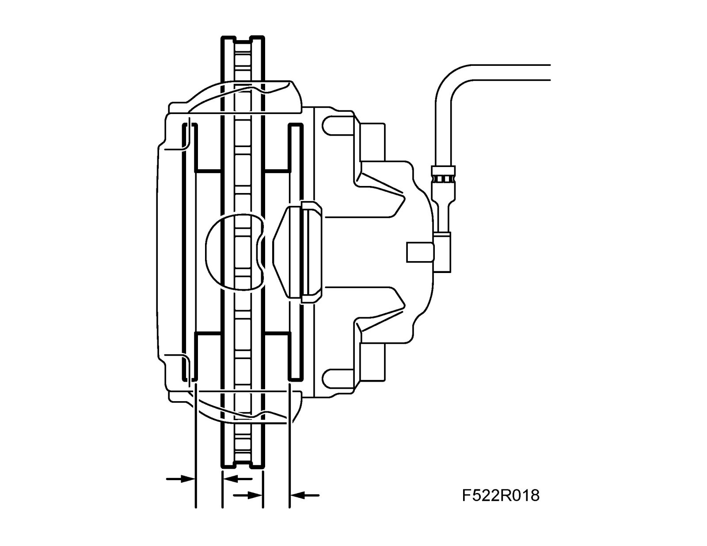

Brake Pads, Checking Between Annual Service
Brake pads, checking between annual service1. Remove the wheels
2. Check the thickness of the brake pads. Use drill bits of different dimensions between the brake disc and brake pad bearing plate as guides while measuring thickness.

3. Check the condition of the brake discs.
4. Brake pad replacement should be performed according to Brake pad wear.
5. Fit the wheels.